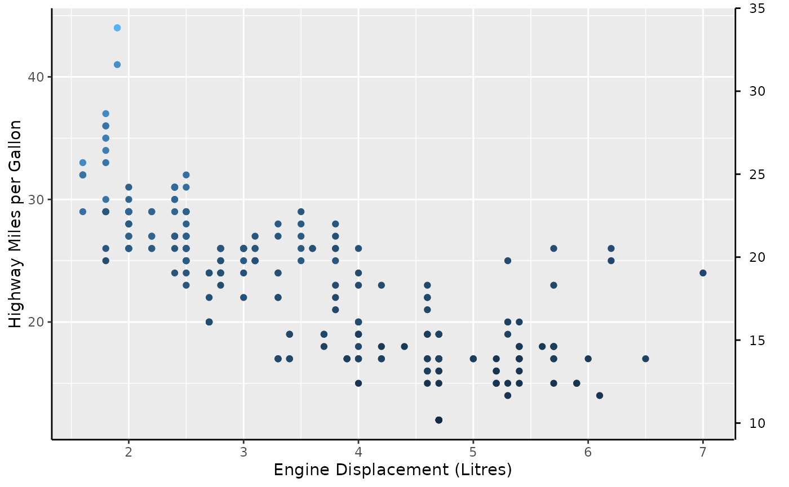

A guided tour
tour.RmdThis article walks through all full guide extensions to give a broad overview of the ‘easy’ way to make use of gguidance. Rest assured, there are harder ways, but these will be covered in a separate article.
Axes
Where (not) to apply
Axes truly are the bread and butter of guides. Naturally, axes shine
brightest as guides for positions like x and y
but can moonlight as auxiliary guides as well. In gguidance, the staple
axis is guide_axis_custom(). At a first glance, these axes
are utterly unremarkable and very much mirror
ggplot2::guide_axis() by design.
# Turn on axis lines
theme_update(axis.line = element_line())
# A standard plot
standard <- ggplot(mpg, aes(displ, hwy)) +
geom_point() +
labs(
x = "Engine Displacement (Litres)",
y = "Highway Miles per Gallon"
)
standard + guides(
x = "axis_custom",
y = "axis_custom"
)
In terms of novelty, the only ‘extra’ option these axes offer is to display bidirectional tick marks.
p <- standard +
scale_x_continuous(guide = guide_axis_custom(bidi = TRUE)) +
scale_y_continuous(guide = guide_axis_custom(bidi = TRUE))
p
However, guide_axis_custom() is more flexible than
ggplot2::guide_axis(). In ggplot2, you’d typically have to
switch to ggplot2::guide_axis_theta() to display an axis
for the theta coordinate of a polar plot. The custom axis
knows how to fit into polar coordinates, so no such fuss is needed when
switching to polar coordinates.
p + coord_radial(start = 1.25 * pi, end = 2.75 * pi)Argueably, the custom guide is a little bit too flexible. It has
exactly no scruples in displaying arbitrary continuous aesthetics, like
colour in the plot below. As you can see, it is not
informative as a colour guide and for this reason I’d advice against it.
Why this unadvised yet possible is a topic that resurfaces later in this
article.

In summary, guide_axis_custom() is a flexible guide that
can be used in any and all position aesthetic, and can (but should not)
be used for other continuous aesthetics.
Keys
The way guides exchange information with scales is through so-called
‘keys’, which you can retrieve using
ggplot2::get_guide_data(). In gguidance, you have to option
to change what information is exchanged through the key
argument.
If you’ve browsed the documentation of
guide_axis_custom(), you might have noticed that there is
no visible option to display minor ticks. To extract the minor ticks, we
can use key = "minor", which invokes the
key_minor() function to extract the minor breaks from the
scale.
standard +
guides(x = guide_axis_custom(key = "minor"))
Likewise, there is no logarithmic variant of
guide_axis_custom(), as this is again a specialty
extraction operation. The equivalent of using
ggplot2::guide_axis_logticks() is to use
key = "log". If you need to tweak the options you can use
the key_log() function instead of the keyword, as is the
case for the y-axis in the plot below where we manually log-transformed
the brainwt variable.
ggplot(msleep, aes(bodywt, log2(brainwt))) +
geom_point(na.rm = TRUE) +
scale_x_log10(
name = "Body weight (kg)",
guide = guide_axis_custom(key = "log")
) +
scale_y_continuous(
name = "Brain weight (kg)",
guide = guide_axis_custom(key = key_log(prescale_base = 2))
) +
theme(axis.ticks.length = unit(2, "mm"))
Alternatively, you can construct a key yourself by using
key_manual(), where you have to provide the value for the
aesthetic, and the label you want to use.
freq <- table(mpg$class) |> as.data.frame()
key_manual(aesthetic = freq$Var1, label = paste0("n = ", freq$Freq))
#> aesthetic .value .label
#> 1 2seater 2seater n = 5
#> 2 compact compact n = 47
#> 3 midsize midsize n = 41
#> 4 minivan minivan n = 11
#> 5 pickup pickup n = 33
#> 6 subcompact subcompact n = 35
#> 7 suv suv n = 62The non-standard evaluation equivalent of key_manual()
is key_map() which works in a similar way, but is more
suited when piping data frames. A nice thing about these function is
that they are a good way to generate secondary axes for discrete scales.
At the time of writing, this isn’t really possible in ggplot2
itself.
key <- table(mpg$class) |>
as.data.frame() |>
key_map(aesthetic = Var1, label = paste0("n = ", Freq))
ggplot(mpg, aes(class, displ)) +
geom_boxplot() +
labs(
x = "Type of car",
y = "Engine Displacement (Litres)"
) +
guides(x.sec = guide_axis_custom(key = key))
To be continued once I find more time writing about this.